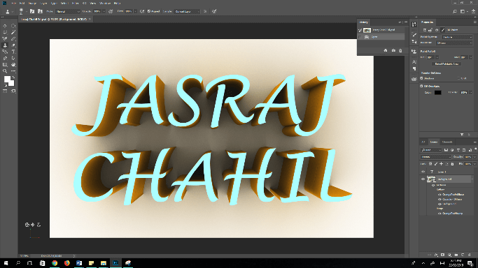

On the right, one of the first projects done by me in photoshop can be seen. Through this project, I learned how to use many of the tools for the first time!

On the right, the lengthy process of the production of the Julian Opie Seflie can be seen through one image.
This project was created in Adobe Photoshop. Firstly, a photo was taken in real life of myself which was used as a base to go off in photoshop. Later, when imported into photoshop, all detail of the image was traced over using the brush tool and then coloured in using the pain bucket tool. This fun process allowed me to become more familiar with photoshop!

On the left, the final version of my Beth Hoeckel collage can be seen.
I made many collages in order to get designs of which I like as the best. The collage on the left is one of my preffered collages.
On the right, one of the first projects done by me in photoshop can be seen. Through this project, I learned how to use many of the tools for the first time!